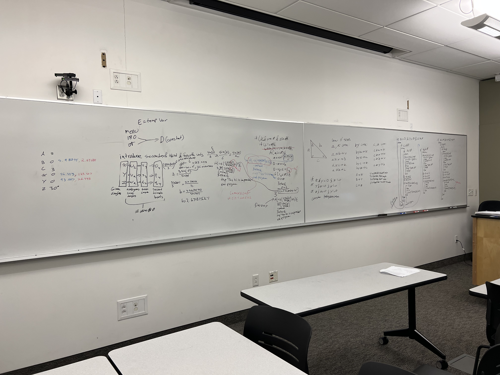
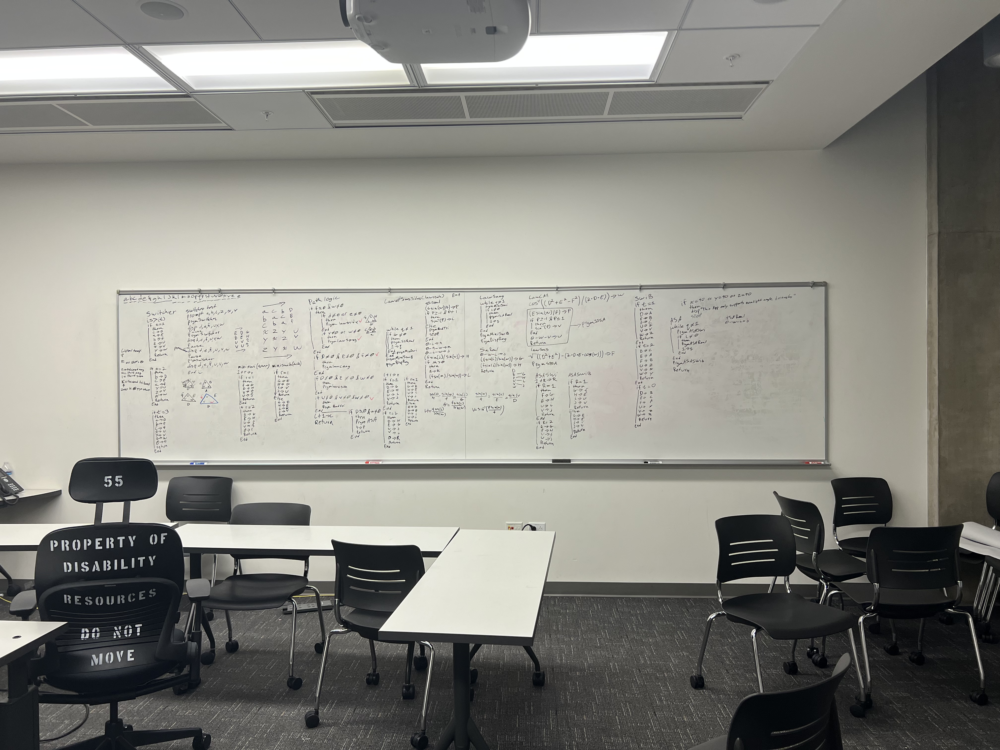
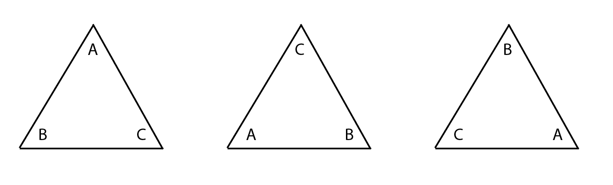

Home - - - - Photos - - - - Ti-84 - - - - Blog
1. Download the TI Connect CE Software here and install it to your computer.
2. Download the TrigTool File here and save it to a place you can easily find.
3. Open the TI Connect CE app and plug your calculator into your computer. On the far left of the app click the icon that looks like a pile of papers that brings you to the connected calculator screen. On the top toolbar there is an icon with a computer with an arrow going to the top left that says “add content from your computer to connected calculator(s).
4. Navigate to the TRIGTOOL file you just downloaded. Click open and then click send. You now have the TrigTool app installed!
Visit the Github page here and read the necessary steps.
I will briefly touch on the process of creating some of the other apps in the Trigtool, but this story will mainly focus on the triangle calculator app. Most of the development time during the creation of the Trigtool was dedicated to triangle app. The triangle calculator had several problems that needed to be broken down and solved before I could begin working on the functionality.
The first hurdle was data input and dealing with data. While the Ti-84 does support assembly programming I don’t have the time to learn how to do that so I wrote the app in Ti-Basic. Ti-Basic is really powerful for utilizing the built in functions of the calculator. However, there are two limiting factors: One, you can only have 27 variables at once. (A-Z and Theta) While this sounds like a lot of variables I quickly found out that it is not. Two, there is no way to create folders and hide supporting functions. With the way Ti-Basic works, to create functions you have to create another program and write the function in the program and then call that program in the original program. Originally when I created the Trigtool it was 33 documents and all of them were very visible to the end-user. While these factors were limiting, they were not impossible to overcome.
The last factor is the actual programming itself. I am going to insert a segment of code from the program right here:

This segment of code checks to see if there are two solutions. The tricky bit is the end of the if functions and loops. Typically, when you program these things are indented so you can tell when one loop ends, and another begins. Without this indentation managing more than 2 or 3 functions becomes almost impossible. There are segments of code that are 5-6 if statements deep. To overcome this, I simply wrote the program on a whiteboard. (Pictured below)
The Ti-84 doesn’t have a debugger. So, I tested every single program I wrote with a debugger I made specifically for each program to make sure they were working as expected. Now there is a way where you can program on an app by Ti but it is so bad that it is actually more worthwhile to program directly on the Ti-84. I wrote so much that I can type at a sustained speed of 16 words a minute on the Ti-84.
The plight of every developer is writing repetitive code for no reason. The easiest way to write the Triangle calculated would be to code by hand each possible situation the triangle could be in and then every possible operation. You can have the same triangle written in three different ways. Visualized here:
I have only included the angles on this diagram, but it shows what I am saying. Why write the whole program three times when we can rotate the variables into each position thus writing the program once. This helped save time writing out a lot of unnecessary code at the beginning of the project but also towards the end when I made little switchers for more specific operations.
The program takes in 6 inputs but three should be unknown. This would mean that the user could enter: 6,5,0,20,0,0. The zeros are the unknowns we are solving for. The program will then compare this input against the known relationships certain angles and sides have. If the numbers do not work for any of the known conditions, the program will rotate the values once and try again, and finally one more time until it finds the right conditions. Once the program has found out which relationship is present, the code will calculate all possible solutions using the law of sines and law of cosines. The program can handle no solution as well as two solution cases. After the values have been computed, the values are send back to the user in the same way they were entered.
This program pushed my calculator and myself to the limit. After successfully creating the program utilizing 33 documents to maintain some level of order I tried to further optimize the program by getting it to work from one document. This is where the program is today and probably will stay. You can view the project on Github here, as well as my linkedin post here.